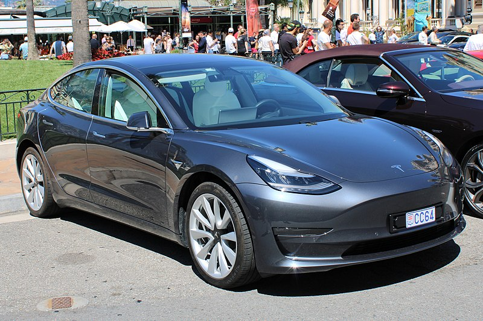

Carros Electricos
 Un automóvil eléctrico es un vehículo automóvil, para transporte de personas o de mercancías, propulsado por uno o más motores eléctricos, usando energía eléctrica almacenada normalmente en baterías recargables. Los motores eléctricos proporcionan a los automóviles eléctricos un par motor instantáneo, proporcionando una aceleración rápida desde parado y continua. Son también hasta tres veces más eficientes que un motor de combustión interna. A diciembre de 2018 existen en el mundo 5,3 millones de vehículos eléctricos en circulación, contando los eléctricos puros y los híbridos enchufables. Los primeros coches eléctricos prácticos surgieron en la década de 1880. De hecho, los coches eléctricos fueron populares a finales del siglo XIX y comienzos del siglo XX, hasta que los avances en los motores de combustión interna, sobre todo con la introducción del motor de arranque eléctrico, y la producción en masa de coches de gasolina más baratos y con un combustible a buen precio llevaron al declive el uso de coches eléctricos. Tras varias décadas en el olvido, la crisis del petróleo de 1973 produjo un breve renacimiento en el interés por los vehículos eléctricos durante la década de 1970 y 1980, aunque tampoco llegaron a alcanzar la comercialización en masa, como sí los vehículos eléctricos debido a los avances en las baterías y en la gestión de la energía, la preocupación global acerca del aumento de precios del petróleo, y la necesidad de reducir las emisiones de gases de efecto invernadero.67 Varios gobiernos nacionales y locales han establecido incentivos para los vehículos eléctricos o híbridos enchufables, exenciones de impuestos y otras ayudas para promover la introducción y la adopción en el mercado de este tipo de vehículos. Los vehículos eléctricos son significativamente más silenciosos que los vehículos de combustión interna. No emiten contaminantes durante su circulación,8 posibilitando una gran reducción de la contaminación local y dependiendo del método usado para la generación de la electricidad empleada, pueden comportar una significativa reducción de la emisión de gases de efecto invernadero). También proporcionan independencia energética respecto a las importaciones de petróleo, lo que en ciertos países es causa de preocupación debido a su vulnerabilidad por la volatilidad del precio del petróleo y su posible efecto en la disrupción del suministro. La recarga de un automóvil eléctrico puede requerir varias horas. Para recorridos de larga distancia, muchos coches permiten un modo de carga rápida que puede proporcionar un 80 % de la carga en media hora, usando cargadores públicos. Aunque el coste de las baterías está descendiendo rápidamente, todavía es alto, y debido a ello la mayor parte de los modelos tienen todavía una autonomía reducida y un mayor coste que los vehículos convencionales. Con estos modelos los conductores también pueden experimentar ansiedad por falta de autonomía: el miedo a que las baterías se gasten antes de llegar a su destino. También hay algunos modelos que ofrecen una gran autonomía como por ejemplo el Tesla Model S que tiene más de 500 km de autonomía. En 2016, existen más de 10 000 modelos de automóviles eléctricos y furgonetas para venta al público, principalmente en Estados Unidos, China, Japón y los países europeos.14 Las ventas globales acumuladas de vehículos eléctricos sobrepasaron el millón de unidades en septiembre de 2016. El modelo con mayor ventas es el Nissan Leaf, puesto en el mercado en diciembre de 2010, con cerca de 240 000 unidades vendidas en todo el mundo hasta septiembre de 2016. El Tesla Model S, puesto a la venta en junio de 2012, ocupa el segundo lugar en ventas globales con cerca de 150 000 unidades hasta noviembre de 2016.